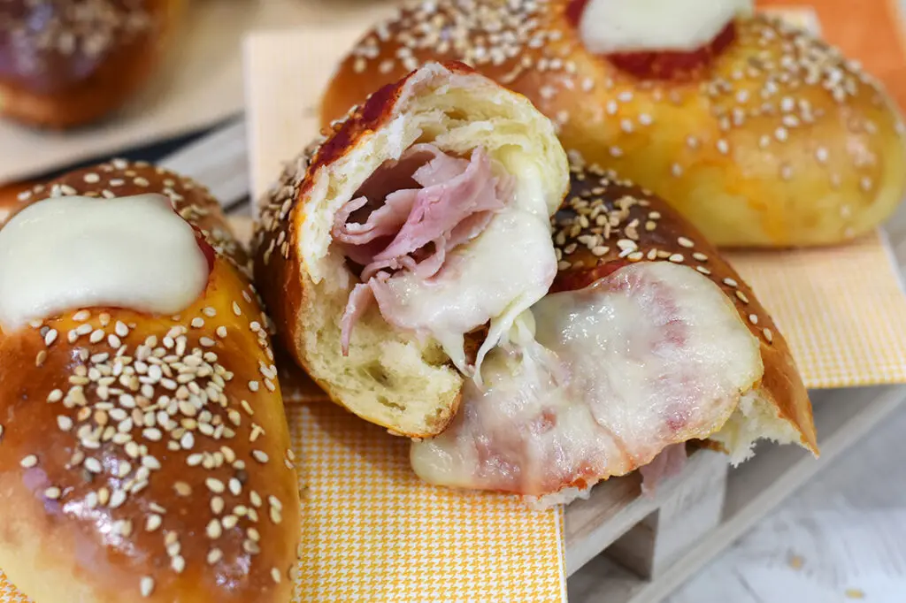

Here you will find several recipes:

Parmigiana siciliana
Parmigiana Siciliana is a classic Sicilian dish featuring layers of golden-fried eggplant,
tangy tomato sauce, and a rich blend of mozzarella and Parmesan cheeses. Baked to bubbly perfection,
it delivers a harmonious medley of textures and flavors, capturing the essence of Sicily.

Calzoni siciliani
Calzoni Siciliani are delightful folded pizzas filled with a savory mixture of ricotta,
mozzarella, diced ham, and tomato sauce. These golden pockets of goodness, baked to perfection,
offer a flavorful and satisfying taste of Sicilian cuisine.

Torta di mele
Torta di Mele, or Apple Pie, is a timeless dessert that encapsulates the warmth of home baking.
With a flaky crust embracing a luscious filling of sliced apples, sugar, and spices, this pie is baked until golden perfection.
Each bite is a comforting blend of sweet, tart, and buttery goodness.